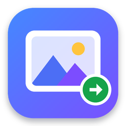

Drag and drop your HEIC photos hereConvert your HEIC photos to JPEG
You can also drop whole folders — the photos inside are found automatically.Pick them from your Photos library or the Files app.

Turn iPhone photos (.heic) into JPEG pictures that open everywhere.
You can also drop whole folders — the photos inside are found automatically.Pick them from your Photos library or the Files app.